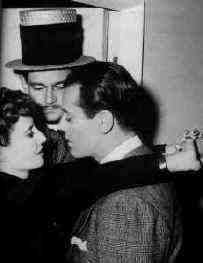
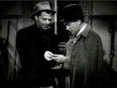
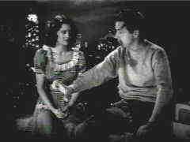
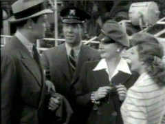
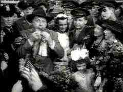
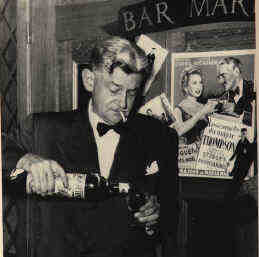

|
Sturges
Emerges
by Stu Kobak
 |
|
Sturges directing The Lady Eve with Fonda and
Stanwyck. |
Preston Sturges and his films inhabit a unique place in film history. There is a strong sense of
period captured in Sturges' films. The balloon of current culture is explored by a man holding a
pin. So sharp are the director's insights into the social milieu of his world that visitors can
glean a shorthand understanding of a time long ago, when values were different and America
struggled to find a sense of humor in the face of great adversity.
Sturges mines gold from a skewed look
at Americana. It is the most wonderful aspect of his inspired lunacy. The writer/director loves
chaos. Even on his sets during filming, wild humor was off the leash, filming went on a roller
coaster path, and practical jokes were daily sustenance. Sturges held court on the set. He was the
king of his movie family, often using the same actors over and over again, especially his cast of
usual supporting suspects. The unpredictable nature of multiple elements converging on a single
point is exciting to the artist. The explosive potential of the moment is often inspired.
|

|
|
Joel McCrea, the quintessential Sturges hero in
Sullivan's Travels. ©Universal |
When Sturges took on Hollywood it was with the pen, hired on to
write a series of movies at Paramount. The writer was so successful, that when he presented his
original screenplay for The Great McGinty and insisted that he also direct, Paramount,
unwilling to let loose this wild talent in the playing fields of other studios, acceded to his
request, and thus began the reign of Sturges, a decade of free-wheeling comedies that aimed arrows
at sacrosanct institutions and flabby easy targets with a blissful indifference. Whether poking fun
at Hollywood itself in Sullivan's Travels or the foibles of the rich in Palm Beach Story,
Sturges used sophistication is such a skewed fashion that he lit up the cinematic pantheon sending
fireworks always where it was least expected.
 |
|
Brian Donlevy and William Demarest in The Great
McGinty. ©Universal
|
MCA-Universal own the rights to most of the
Sturges classics save for Unfaithfully Yours from Fox Video and all of the great films are
available on laser. Perhaps when the potential of DVD's enormous storage is explored there will be
a complete collection of the Sturges opus.
The Great McGinty, released in 1940, runs 81 minutes, and while elements of Sturges'
madness are freely up for grabs in this film, it is not consistently wild and breathless as some of
the later director's choice cuts. The screenplay earned the writer his only Academy Award, though
he was nominated twice more in the same category.
In "McGinty," Sturges takes point blank aim at the stench of
politics. Set during the depression, Brian Donlevy plays derelict McGinty who is offered a bribe
for his vote and manages to visit the polls more times than any other political puppet ever pulling
the voting booth lever. Political boss Akim Tamiroff moves him up the political ladder finding
inspiration in the McGinty resourcefulness and willingness to cooperative without moral qualms.
In order to run for Mayor, the boss decrees that McGinty must be married
to garner the woman's vote. He marries his secretary and inherits an instant family and finally
falls in love. When he falls in love with her it sparks some sense of morality in him, thus ruining
his political career. It's all told in flashback from McGinty's perspective as a bartender in a
dimly lit South American bar. Is it just a bartender's patter or is it McGinty's attempt to find
the psychology to help a distraught patron. Donlevy is loud and gruff as McGinty. He takes himself
wonderfully seriously. Akim Tamiroff gets to fill the screen in hilarious overacting in every scene
on screen. Take note of the bust of Lincoln on McGinty's desk during his term of office as
Alderman. For some reason director's with a bite in their baton see a delicious irony in the
worship of Lincoln by the most corrupt political entities.
The laser looks fresh and the film is always a delight. Sharp images and
strong contrast, hallmarks of MCA discs and The Great McGinty is no exception. Minor
markings of age do not mar the image noticeably. The theatrical trailer captures the spirit of the
film. This is an old pressing, so the absence of chapter stops is not unusual. My laser was stored
at an angle and caused some warping which the weight of some big books will remove.
The delightful, thoroughly charming Christmas
in July, made after but released prior to the cynical
"McGinty" was released in 1940. What it lacks in Sturges bite, it makes for with dazzling
pace, insouciant characters, and a wild finish worthy of the best of Sturges.
Dick Powell stars as a young clerk whose life turns delightfully around
when he mistakenly wins a slogan contest sponsored by the Maxford Coffee Company. "If you don’t
sleep at night, it isn’t the coffee. It’s the bunk!" The slogan is an choice example of
the director’s fondness for clever phrases and preposterous word combinations. Powell is charming
as the dreamer whose dreams come true. Ellen Drew compliments Powell well as his girlfriend, and
the
|

|
|
"It's the
bunk." Powell and Drew in Christmas in July. ©Universal |
uproarious Raymond Walburn and William Demarest are
amongst the Sturges stock players that bring the craziness to life. I defy you not to laugh. There
are 8 chapters and the theatrical trailer is included for your enjoyment. The crisp transfer and
strong contrasts enhance the pleasures of viewing this excellent laser disc. Fresh as yesterday
today.
Sullivan's Travels, 1941, represents a Sturges departure since it mixes madcap and
drama. The madcap is bliss, but the drama, which dominated the second half of the film, can be
pedantic and heavy going.
Joel McCrea is an ideal Sturges hero. He plays hot movie director John J.
Sullivan, a comic master looking for the opportunity to explore his more serious side on film.
Sounds like Sturges may have been thinking of Sullivan as an alter ego and the dramatic passages of
this film echo that desire for serious commentary trying to emerge from Sturges.
Veronica Lake is charming as a wannabe star who attaches herself to
Sullivan. Lake proves a sexy comedienne. Sturges can mine comic gold from unlikely diggings. The
usual crew of Sturges suspects round out a dizzy cast in a coast to coast roller coaster of a road
movie.
Sullivan’s Travels is a clean looking laser with nine chapters
including a theatrical trailer. Contrast levels could have been stronger. The 91 minute film has
clear mono sound.
It hardly seems possible, but Sturges was on a creative binge the likes
have never been seen before or after in Hollywood. He kept rolling the artistic dice and made pass
after pass of seven in rapid succession. Given the chance to free wheel with his imagination, the
writer poured out script after script and the director molded the vision to celluloid immortality.
Before the year was out, another Sturges classic was on the screen. For The Lady Eve Sturges secured the star services of Henry Fonda and
Barbara Stanwyck. It turned into another marvelous comedy that continues to delight audiences
today.
Henry Fonda plays Charles "Hopsie" Pike, the heir to a great ale
fortune. On a luxury ocean liner returning to New York, Pike meets Colonel Harrington and his
daughter Jean, falls head over heels for her, and is taken to the cleaners at cards by the pair. It
turns out they are a legendary team of card sharks plying their trade over the ocean blue. Most of
Sturges' films have a cute turn of phrase. In The Lady Eve it's "Pike's Pale, the Ale
that Won for Yale." The writer even manages to use the equivalent of a broad screen pratfall
in linguistic gymnastics.
The Lady Eve is the first film of the Sturges opus to take aim at
the rich. Just as they are easy targets for the Harrington con team, the director takes delight in
mining laughs from their pretensions. Mostly "Eve" is romantic fluff. Fonda and Stanwyck
make an excellent comic team combining the lanky innocence of Fonda with the street smarts of
Stanwyck. Again, the supporting cast produces prodigious numbers of laughs led by Sturges favorite
William Demarest as Pike's bodyguard, Charles Coburn as Colonel Harrington, and Eugene Palette of
the foghorn voice, as the senior Pike.
MCA transferred most of the Sturges titles to laserdisc in laser's early
years. Thanks to consistently great source material, they all look quite good, but they suffer from
lack of laser amenities such as ample chapter stops. The Lady Eve is no exception. It's a
clean and easy to look at laser with good contrasts and sharp images.
The Palm Beach Story again teams
the likable Joel McCrea with Sturges in an attempt to follow up on their success of the following
year. Working with Sturges for the only time is Claudette Colbert, turning in one of her most
delightful screen performances.
 |
| McCrea, Colbert, Vallee and Astor in The Palm
Beach Story. ©Universal |
This is brilliant comedy that
takes aim again at the foibles of the idle rich. McCrea and Colbert play Gerry and Tom Jeffers.
Money pressures cause a temporary rift between the architect and his wife. Gerry travels to Florida
in a riotous train trip replete with serenades by the drunken Ale and Quail Club. Between reveling
with the pixilated rail riders and meeting the inspired Weenie King, Gerry manages to captivate J.
D. Hackensacker III, the richest man in the world. Rudy Vallee, as Hackensacker, takes Gerry to
Palm Beach for a cruise and romance aboard his yacht. By the film’s dizzy wind-up, Tom makes his
way to Palm Beach as well and the laughs continue unabated as Mary Astor completes a foursome as
Hackensacker’s sister. Director and writer Sturges brings tears to your eyes and cramps to your
belly.
The source material provides for a lovely laserdisc. Palm Beach Story
is very sharp with excellent contrasts. An older edition from MCA, there are only two chapter stops
provided on side two. A theatrical trailer is included at the end of the 88 minute film which is
presented CAV on side two. Don’t even think about passing this up.
After Hollywood ,New York and Palm Beach, Sturges zeroed in on small town
America with The Miracle of Morgan's Creek. This time the director's unbridled spirit got
him and his film into trouble. The Breen gang, Hollywood's version of today's Valente led Ratings
Board, sharpened their censorship fangs delaying the release of Morgan's Creek for more than a
year.
The wild vision of small town America was disturbing enough for
conservative America, but Sturges peppered the streets with promiscuity, sexual innuendo and a
general irreverence for Christian values.
Eddie Bracken stars with mercurial Betty Hutton in The Miracle of Morgan's Creek. Hutton is Trudy
Kockenlocker, an accommodating gal who winds up pregnant after a wild night on the town with a
group of local GIs about to ship out. Bracken is Norval Jones, hopelessly in love with Trudy, who
steps into the path of small town wrath in defense of Trudy. To make matters more complex, William
Demarest, as Trudy's father, Officer Kockenlocker, has the job of locking up Norval despite the
fact that he is protecting Trudy.
 |
|
Betty belts a tune in The Miracle of Morgan's
Creek. She has a few babies
too. ©Paramount |
Some of the comedy is as daffy
as anything ever created by the director, like Norval's jail break, but the attack on the mores of
the town is somewhat dated, causing some of the caustic comedy to fall flat. Still, many consider
this Sturges' comic masterpiece. I tend to fall asleep during the least affecting segments and I
never nod off watching anything else from Sturges, no matter how much wine or how little sleep.
Sturges, for the first time, revisits his earlier work by adding some
elements from The Great McGinty. Morgan's Creek is a town in the State of which Dan McGinty is
Governor and it is McGinty and the Boss, assayed by Donlevy and Tamiroff again, who insist upon
capitalizing on Trudy's remarkable multiple delivery and freeing Norval with honors. Politics, big
and small, false mores, small town life itself, take broadsides from the comic genius Sturges.
Released from Paramount through Pioneer, The Miracle of Morgan's Creek
is 98 minutes in black and white. The transfer elements are not as clean as the other Sturges films
and the transfer is slightly soft in some scenes. Contrast could have been tweaked slightly more.
The laser is more than serviceable though and includes ten chapter stops. Check it out for yourself
and measure it against some of the other Sturges gems.
A double feature from MCA, this set packages two Preston Sturges films
that are in different leagues. The Great Moment opens the presentation, though it is by far the
lesser of the two films, a minor Sturges anomaly possibly imposed on him by the studio. It's wise
to open with the weaker film, since, like drinking the greater wine first, seeing Hail the
Conquering Hero in initial consecutive viewing would have totally overpowered the pleasures of The
Great Moment.
Joel McCrea is the innocent Dr. William Morton and is very effective
under Sturges’ direction. There is a pervasive humorous element of tall tales passing over
polished mahogany bars. The biography is never taken too seriously. This is not Sturges at his
untethered best, however. It a Sturges appetizer for the main course that follows. The Great
Moment is a rather clever satire of the entire genre of biographies of great personages. It's
not clear that this was the intention of Paramount.
Hail
the Conquering Hero is concoction of unbridled hilarity, written and directed by a master
of the madcap. When Woodrow Lafayette Pershing Truesmith, engagingly played by Eddie Bracken, is
discharged from the army because of chronic hay fever, he meets a group of GI’s on leave at a
city bar. Truesmith’s generosity prompts them to take matters The into their own hands and bring
Woodrow back to his home town in hero’s clothes. outcome of the charade leads to an unwilling
Woodrow being enlisted to challenge the mayor in an imminent election. "Hero" could
easily have taken place in Morgan's Creek or in any small town hungry for heroes.
Sturges has a field day with his small town characters. Franklin Pangborn
is a joy to watch as he tries desperately to organize Woodrow’s hero’s homecoming celebration.
The mayor, played by Raymond Walburn is wonderfully preposterous in his buffoonery. William
Demarest is manic in his defense of Woodrow. Hail the Conquering Hero is sure to produce
uncontrollable tears of laughter.
Hail the Conquering Hero at 101 minutes is the better looking of
the two discs. It has been transferred from an pristine print and the result is superlative black
and white images. The source material for The Great Moment, 87 minutes, is not quite as
clean, but it is more than presentable. Each movie has been presented on a separate disc, much
preferable to trying to cram two movies on three disc sides.
 |
|
The American small town in Hail the Conquering
Hero. ©Universal |
Unfaithfully Yours, another
Sturges gem, mercilessly satirizes the life of a world-famous symphony conductor, It is considered
the last truly successful Sturges created movie .Rex Harrison has all the tools to portray Sir
Alfred de Carter to an absolutely snooty tee. The great conductor’s colossal ego inadvertently
expands into jealous rage when his brother-in-law Arthur, in a delicious turn by Rudy Vallee
(Vallee also provides sterling support in another Sturges must-see, The Palm Beach Story),
mistakenly provides the ammunition for Sir Alfred’s suspicions about his wife's fidelity. Linda
Darnell is perfect as the wife and Sturges integrates the music so well into the plot using it to
trigger de Carter’s fantasies of revenge, inspired by the particular piece of music he is
conducting. This is original and frenetic filmmaking at its delightful best which is sure to bring
tears of laughter to a joyful evening.
Fox Video has issued this 105 minute film in an excellent transfer. The
transfer elements are very clean and have been mastered for laser with excellent contrasts. All
levels are strong on this CLV disc which has seven chapters.
Sturges makes a fascinating study of America suffering through the throes
of the great depression and laughing its way to health. Preston Sturges himself is most successful
wading through the desperation of the times, feeding off the festering carrion of a damaged
country. As the war years were over, Sturges found that his well of creativity had been virtually
consumed by the fire with which he led his life and poured forth his movies. Unfaithfully Yours
was the last true original vision from this explosive satirist. The Beautiful Blond from Bashful
Bend, 1949, a minor effort starring Betty Grable, the last of Sturges' Hollywood efforts, fails
to capture the divine madness of the great director's volcanic production of lance of the decade
the b` He died in 1956 in Paris, searching for the magic, awash in drink and self-pity, always
watching for the comet so that he might one last desperate stab at grabbing the tale and once again
igniting the cinematic heaven's a unique brand of humor that before Sturges never existed and after
Sturges never again found the force of life. I can't thinking about McGinty, holding court in a
forsaken South American bar regaling patrons with tales of political power. Did it foreshadow
Sturges own last days, an expatriate in Paris, exiled from his comic throne, bankrupt financially
and creatively, recalling days of past Hollywood glory with a glass in one hand and a bottle in the
other
 |
|
Sturges in Paris circa 1957. |
There are a couple of excellent
books on Sturges for those who'd like to find out more about his life and times, the on-screen and
off-screen shenanigans of this wild, unpredictable. The best volume features a biography of Sturges
and several screenplays. The read is quick and the material complimentary.
A Sturges collection would make a grand Universal project for DVD.
Collected together, the films of Preston Sturges represent a level of hilarity likely never to be
attained again.
|
|
|

Selections from the feature archive include articles on
Akira Kurosawa, Frank
Darabont, Blonde Bimbos, Hollywood Street Gangs, or Vietnam: The
Hollywood Pariah, and many more....
The Exquisite Muse of Zhang Yimou

The powerful image-making of Zhang Yimou has revealed itself in
virtually every film he has made. Coupled with his remarkable collaboration with actress Gong Li,
Zhang's has built a stunning body of work Click the image to read all about it.

 Gary Morris's insightful publication Bright Lights
Film Journal turns the celluloid in films from a unique perspective. Click on the image above
for more pure movie views. Gary Morris's insightful publication Bright Lights
Film Journal turns the celluloid in films from a unique perspective. Click on the image above
for more pure movie views.

The official site for information about the great comic director. A treat for connoisseurs of
classic Hollywood madcap.

The home of director Kevin Smith, replete with inside info on his films
like Clerks, Mall Rats, Chasing Amy and Dogma.
 DVD Informix is a British site providing a variety of DVD
information, including lots of DVD software. Check it out from articles to links. DVD Informix is a British site providing a variety of DVD
information, including lots of DVD software. Check it out from articles to links.
 Lovers of
Hong Kong movies will relish MC4's
site that includes reviews and other information about the Hong Kong movie scene. Lovers of
Hong Kong movies will relish MC4's
site that includes reviews and other information about the Hong Kong movie scene.
 The online site for Film Comment Magazine
includes all the information you need to know about cinematic events sponsored by the Film Society
of Lincoln Center. The online site for Film Comment Magazine
includes all the information you need to know about cinematic events sponsored by the Film Society
of Lincoln Center.
 Direct from the corridors of the Home Theater Forum, Home Theater Talk is the
newest place on the Net to discuss everything home theater. Friendly atmosphere and knowledgeable
folks are the secret ingredients. Direct from the corridors of the Home Theater Forum, Home Theater Talk is the
newest place on the Net to discuss everything home theater. Friendly atmosphere and knowledgeable
folks are the secret ingredients.

Specializing in DVD reviews, DVD Authority boasts almost 400 reviews in an easy to use, elegant,
interface.
They may be judgmental, but that's the point, isn't
it. Lots of DVD reviews plus news and more.
Click on the link to visit the judge's chambers.
 . .
The
Movie Poster Archive includes extensive poster images from the films of stars like Susan Hayward,
Kirk Douglas, Katharine Hepburn and many more. Our featured star is John Wayne
Vietnam: The Hollywood Pariah

During World War II, Hollywood pumped
out war movies one after the other. Vietnam was was another story. As far as Hollywood was
concerned it was a pariah.
|